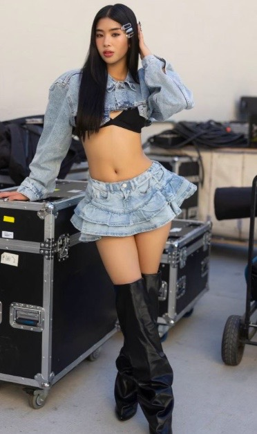
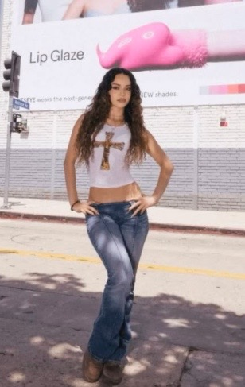
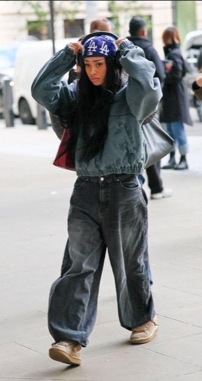
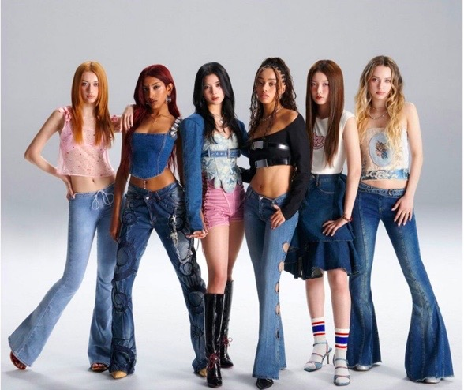

Lara Raj (born Lara Rajagopalan on November 3, 2005) is an indian American singer, dancer, and actor best known as a standout vocalist in the global girl group KATSEYE. Formed by HYBE and Geffen Records, she gained international recognition after placing highly in the 2023 reality survival show The Debut: Dream Academy.
Sophia Laforteza, was born on December 31, 2002, in Manila , Philippines. She is a Filipino singer based in the United States and the leader of the girl group KATSEYE . In 2022, SOPHIA stood out among 120,000 applicants in a global girl group audition held by HYBE x Geffen Records and became a trainee under the label.
Daniela Andrea Avanzini Llorente (born July 1, 2004) is an American singer and dancer. She is best known as a member of the girl group Katseye, formed through the 2023 reality show Dream Academy. She was previously a contestant on the 13th season of So You Think You Can Dance in 2016.
Megan Meiyok Skiendiel (born February 10, 2006, also mononymously known as Megan) is an American singer, dancer and actress. She is best known as a member of Katseye, a girl group formed through the 2023 competition reality show Dream Academy created by Hybe and Geffen Records
Jeung Yoon-chae (Hangul born December 6, 2007), known by the name Yoonchae, is a South Korean singer who is based in Los Angeles, California. She is the Maknae of the global girl group KATSEYE, which debuted on June 28, 2024. The group is made under Hybe and Geffen Records after the global talent show Dream Academy in 2023.
Meret Manon Sarpong Bannerman (born June 26, 2002), also known mononymously as Manon, is a Swiss singer. She began her career through her social media presence on Instagram and TikTok. As a singer, she became the first Black artist to sign with a Hybe label, debuting as a member of the girl group Katseye in 2024, formed through the 2023 competition reality show Dream Academy.
According to hybe Manon Bannerman is on hiatus to stay focus on her health at the other side manon said that “Hi friends. 🤍 I want you to hear this from me, I’m healthy, I’m okay, and I’m taking care of myself. Thank u for checking in! Sometimes things unfold in ways we don’t fully control, but I’m trusting the bigger picture. Thank you for standing by me. I love you endlessly and can’t wait to see you again.”
